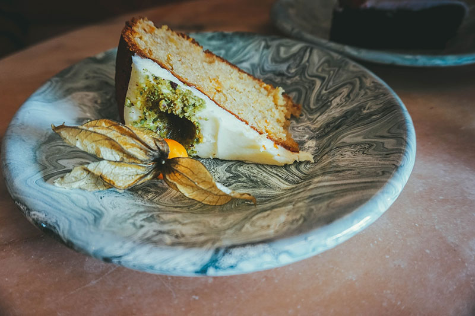

מתכון פשטידת גזר מתוקה

רכיבים
- 4 גזרים גדולים - בערך 500 גרם
- 1 כוס סוכר חום או לבן
- 1/2 חבילה של מרגרינה או 1/2 כוס שמן
- 1 כף גדושה מיץ לימון
- 1 כף גדושה מים
- 2 ביצים
- 1 1/2 כוסות קמח
- 1/2 כפית אבקת אפיה
- 1/2 כפית סודה לשתיה
- 1 כפית מלח

אופן ההכנה
לטחון את הגזר ולהוסיף את כל הרכיבים הרטובים כולל את הסוכר - מומלץ לפי סדר הופעת הרכיבים. כאשר מתקבלת תערובת חלקה, הוסיפו את הרכיבים היבשים.
לאחר הוספת הרכיבים היבשים יש להניח בתבנית ולהשים בתנור שחומם ל-180° למשך 1/2 שעה.
אפשר בקלות להגדיל כמויות למנת הגשה גדולה יותר. אפשר גם להוסיף ציפוי (- מומלץ בטעם וניל ).
